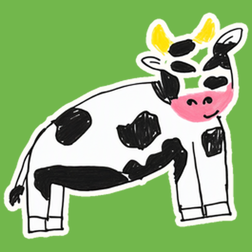

İnekler Kaçtı!
The Cows Escaped! · Die Kühe sind los!
Gizlilik Politikası
Son güncelleme: 21 Kasım 2026
Kısaca: İnekler Kaçtı! hiçbir kişisel veri toplamaz, saklamaz ya da paylaşmaz.
Bu politika, Volkan Bal tarafından geliştirilen “İnekler Kaçtı!” oyunu (Android paket adı
com.volkanbal.ineklerkacti) için geçerlidir.
Toplanan veriler
Yok. Oyun ad, e-posta, konum, fotoğraf, ses kaydı, rehber, cihaz kimliği ya da başka herhangi bir kişisel bilgi istemez ve toplamaz. Hesap açmak gerekmez.
İnternet, reklam ve üçüncü taraflar
- Oyun internet izni istemez ve internete bağlanmaz; bütün içerik uygulamanın içindedir.
- Reklam, analiz/izleme aracı, sosyal ağ bağlantısı ya da üçüncü taraf yazılım kiti yoktur.
- Uygulama içi satın alma yoktur.
- Kamera, mikrofon, konum ya da rehber izni istenmez.
Cihazda saklananlar
Oyun ilerlemesi (kazanılan yıldızlar, en iyi süreler, seçilen dil ve ses ayarı) yalnızca cihazın içinde saklanır ve hiçbir yere gönderilmez. Uygulama kaldırıldığında ya da uygulama verileri silindiğinde bu bilgiler de silinir. Android’in kendi yedekleme özelliği açıksa, bu küçük kayıt da cihazın diğer uygulama verileriyle birlikte kullanıcının Google hesabına yedeklenebilir; bu yedekleme Google’ın ve kullanıcının ayarlarındadır, geliştirici bu verilere erişemez.
Çocuklar
Oyun çocuklar için yapılmıştır. Çocuklardan ya da başka herhangi bir kullanıcıdan kişisel veri toplanmaz.
Google Play
Oyunu Google Play’den indirdiğinizde Google, kendi hizmetleri için (örneğin indirme ve uygulama çökme istatistikleri) bazı bilgileri işleyebilir. Bu işlem Google’ın gizlilik politikasına tabidir; geliştirici kişisel bilgilerinize erişmez.
Değişiklikler
Bu politika değişirse güncel hâli bu sayfada, yeni tarihle yayımlanır.
İletişim
Sorularınız için Google Play’deki uygulama sayfasında yer alan geliştirici e-posta adresine yazabilir ya da GitHub üzerinden mesaj bırakabilirsiniz.
Privacy Policy
Last updated: 21 November 2026
In short: The Cows Escaped! does not collect, store or share any personal data.
This policy applies to the game “The Cows Escaped!” (“İnekler Kaçtı!”), developed by Volkan Bal
(Android package name com.volkanbal.ineklerkacti).
Data we collect
None. The game does not ask for or collect names, email addresses, location, photos, voice recordings, contacts, device identifiers or any other personal information. No account is needed.
Internet, ads and third parties
- The game does not request internet permission and never connects to the internet; all content is inside the app.
- There are no ads, no analytics or tracking tools, no social network links and no third-party SDKs.
- There are no in-app purchases.
- The game does not ask for camera, microphone, location or contacts permissions.
What is stored on the device
Game progress (stars earned, best times, chosen language and sound setting) is stored only on the device and is never sent anywhere. It is deleted when the app is uninstalled or its data is cleared. If Android’s own backup is turned on, this small save may be backed up to the user’s Google account together with the device’s other app data; that backup is controlled by Google and the user’s settings, and the developer has no access to it.
Children
The game is made for children. No personal data is collected from children or from any other user.
Google Play
When you download the game from Google Play, Google may process some information for its own services (for example download and crash statistics). This is governed by Google’s Privacy Policy; the developer does not get access to your personal information.
Changes
If this policy changes, the updated version will be published on this page with a new date.
Contact
For questions, write to the developer email address shown on the app’s Google Play page, or leave a message on GitHub.
Datenschutzerklärung
Zuletzt aktualisiert: 21. November 2026
Kurz gesagt: Die Kühe sind los! erhebt, speichert und teilt keinerlei personenbezogene Daten.
Diese Erklärung gilt für das Spiel „Die Kühe sind los!“ („İnekler Kaçtı!“), entwickelt von Volkan Bal
(Android-Paketname com.volkanbal.ineklerkacti).
Erhobene Daten
Keine. Das Spiel fragt weder Namen, E-Mail-Adressen, Standort, Fotos, Sprachaufnahmen, Kontakte, Gerätekennungen noch sonstige personenbezogene Daten ab und erhebt sie nicht. Ein Konto ist nicht nötig.
Internet, Werbung und Dritte
- Das Spiel fordert keine Internet-Berechtigung an und verbindet sich nie mit dem Internet; alle Inhalte sind in der App enthalten.
- Es gibt keine Werbung, keine Analyse- oder Tracking-Werkzeuge, keine Verknüpfung mit sozialen Netzwerken und keine SDKs von Drittanbietern.
- Es gibt keine In-App-Käufe.
- Das Spiel fragt nicht nach Kamera-, Mikrofon-, Standort- oder Kontaktberechtigungen.
Was auf dem Gerät gespeichert wird
Der Spielstand (gesammelte Sterne, Bestzeiten, gewählte Sprache und Toneinstellung) wird nur auf dem Gerät gespeichert und nirgendwohin gesendet. Er wird gelöscht, wenn die App deinstalliert oder ihre Daten gelöscht werden. Ist die Android-eigene Sicherung aktiviert, kann dieser kleine Spielstand zusammen mit den übrigen App-Daten im Google-Konto des Nutzers gesichert werden; diese Sicherung liegt bei Google und den Einstellungen des Nutzers, der Entwickler hat keinen Zugriff darauf.
Kinder
Das Spiel ist für Kinder gemacht. Weder von Kindern noch von anderen Nutzern werden personenbezogene Daten erhoben.
Google Play
Wenn Sie das Spiel bei Google Play herunterladen, kann Google einige Informationen für eigene Dienste verarbeiten (zum Beispiel Download- und Absturzstatistiken). Dafür gilt die Datenschutzerklärung von Google; der Entwickler erhält keinen Zugriff auf Ihre personenbezogenen Daten.
Änderungen
Ändert sich diese Erklärung, wird die aktuelle Fassung mit neuem Datum auf dieser Seite veröffentlicht.
Kontakt
Bei Fragen schreiben Sie an die E-Mail-Adresse des Entwicklers auf der Google-Play-Seite der App oder hinterlassen Sie eine Nachricht auf GitHub.